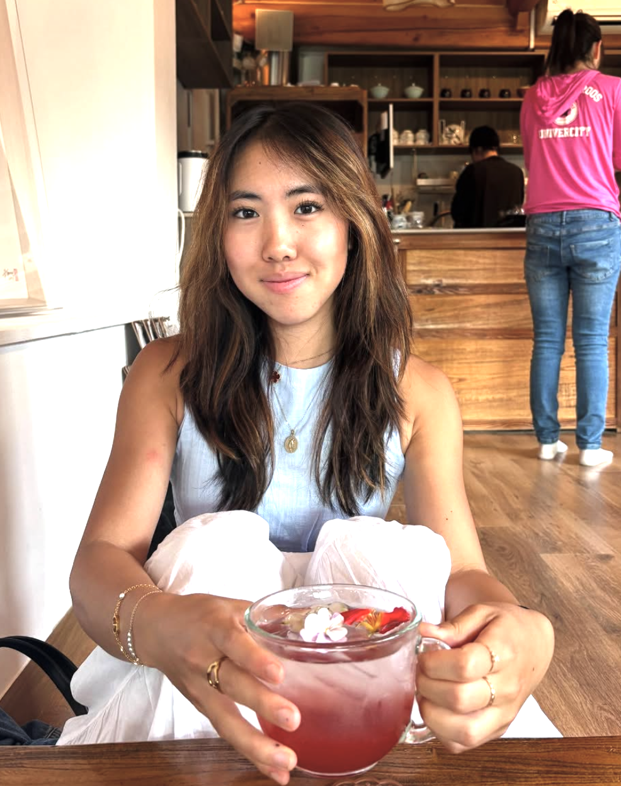

Hi! I am Ashley Luo.
I am a rising sophomore studying Applied Mathematics-Computer Science and Business Economics at Brown University. While my interests continue to evolve, I’ve developed a strong passion for the intersection of technology, data, and enhancing the consumer experience. In my free time I enjoy running, watercolor, and cooking (namely hosting dinner parties). I have a strong interest in design which influences both my creative projects and how I approach problem-solving.
About
Details about your background, education, interests, etc.
Projects
Highlight your best work, with links if needed.
Contact
Ways to get in touch: email, LinkedIn, etc.